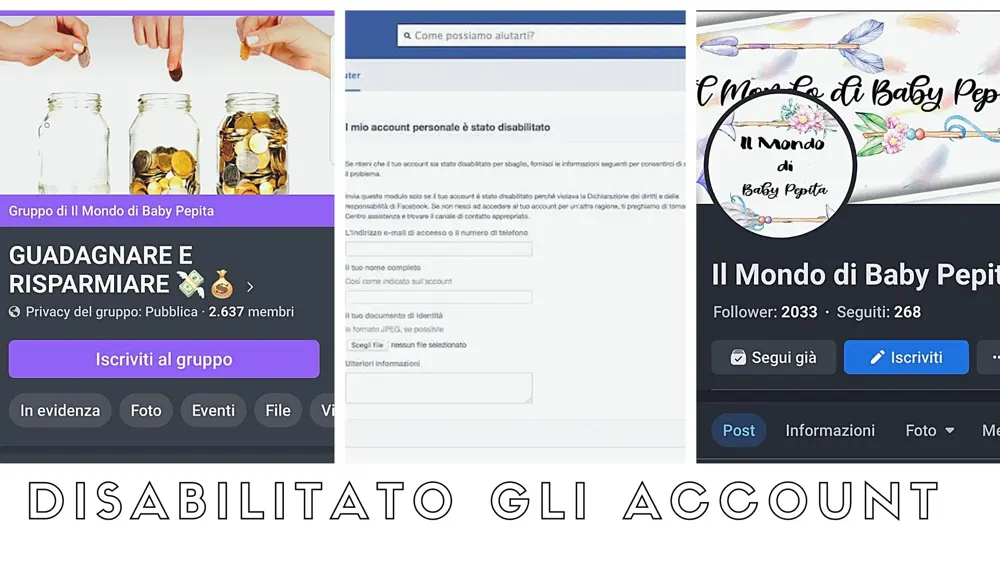
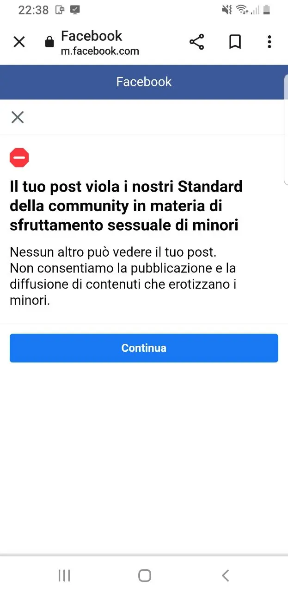

Mi hanno disabilitato gli account

Ebbene sì, mi hanno disabilitato gli account, Facebook e instagram non mi vogliono più!
Un venerdì sera di metà ottobre ero s lezione, sto studiando sì, marketing e quindi non ero assolutamente collegata ai social. Ero intenta ad apprendere nuove nozioni per il mio business.
Qualche ora dopo mi arriva una notifica che mi comunica che il mio profilo Facebook è stato sospeso per violazione delle regole guida.
Subito dopo scopro che anche il profilo instagram è stato disabilitato.
Cerco di capire in primo luogo, cosa fosse successo e mi compare un messaggio di Facebook che dice che il profilo è stato disabilitato per 'sfruttamento sessuale di minori'.

Avete letto bene!
Qualcosa di assurdo, di inesatto e inappropriato.
Contatto l'assistenza dall'account
Cerco di inviare i documenti di identificazione e trovo il primo ostacolo.
Il mio nome è Maddalena all'anagrafe ma tutti mi chiamano Manilla.
Di conseguenza il mio documento non può essere associato al profilo.
Cerco altri metodi e contatto l'assistenza dei profili aziendali in quanto ho fatto le inserzioni con quel profilo, quindi ho la possibilità di poter contattare facebook business.
Scrivo a loro e mi rispondono in chat, molto gentilmente chiamandomi al telefono, nonostante verifichino che il mio profilo non è un profilo di un pedofilo OVVIAMENTE, non possono però aiutarmi essendo un profilo privato.
Quindi altro buco nell'acqua.
Tra tanti tentativi passa una settimana, è il giovedì sera della settimana successiva, all'improvviso arriva una notifica da Facebook.
Il tuo profilo è stato sospeso per violazione delle regole guida, quindi anche il mio secondo account, quello che utilizzavo collegato al sito, alla pagina di Il Mondo di Baby Pepita e il gruppo di Guadagnare e Risparmiare. Insomma, la storia si ripete.
2 account e 1 instagram fuori uso.
Sono bloccata su tutto senza un motivo, senza che io abbia fatto qualcosa e senza che Facebook controllasse prima di bloccare.
Insomma, invani i tentativi fin'ora di contattare l'assistenza, ricevo sempre lo stesso e solito messaggio automatico.
Mi dispiace solo di aver perso il gruppo e la pagina e la rabbia mi viene perché non è stata colpa mia.
Nuovi inizi
Nel frattempo però, ho creato un nuovo account instagram e lì sto ricominciando.
Questa volta però ho preso il lato positivo da questa storia, perché ho sempre tratto almeno un lato positivo da ogni avventura nella vita.
Eh si, ho approfittato del profilo raso al suolo per creare uno nuovo indirizzato questa volta, verso il mio lavoro, indirizzato verso la mia nicchia, il marketing.
Ho deciso dunque, di mettere online tutte le mie competenze e insicurezze, ho in mente di abbattere i pregiudizi che mi sono fatta dei social e metterci la faccia.
Voglio uscire dalla mia comfort zone e mostrare ciò che so fare, quindi il nuovo profilo di instagram parlerà di digital marketing, di tutorial su siti, canva, grafica e tante tante cose.
Se vi va di seguirmi CLICCA QUI